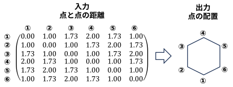
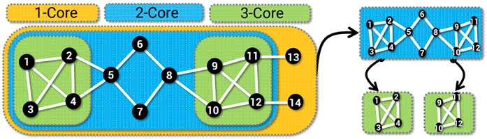
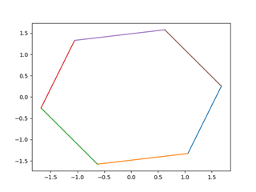
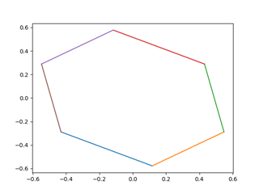

複数の点の、お互いの距離情報から二次元や三次元の配置(マップ)を復元するもの。

近接行列 (proximity matrix)：お互いの距離情報
・正方行列 ：総当たりの組み合わせの距離なので。
・対象行列 ：A から B までの距離と B から A までの距離は同じ。
・対角成分は０：自分から自分までの距離なので。
(点の数)×(点の数)の行列を扱うので、点の数が多いと使いづらくなる。
別名 EDM: Euclidean Distance Matrix (ユークリッド距離行列)
二次元または三次元の配置(マップ)
・回転しても、裏返しても距離は変わらないので、結果には回転、裏返しのあいまいさがあり、経度、緯度のような絶対的な出力にはならない。
これが何の役に立つのか？

近接行列(の各要素を2乗したもの)を与えれば, 位置関係に変換してくれる。
(data/mds/src/mds_by_scikit-learn.py)
import numpy as np
import matplotlib.pylab as plt
from sklearn import manifold
# 近接行列(の各要素を2乗したもの)
P = np.array([
[0.00, 1.00, 1.73, 2.00, 1.73, 1.00],
[1.00, 0.00, 1.00, 1.73, 2.00, 1.73],
[1.73, 1.00, 0.00, 1.00, 1.73, 2.00],
[2.00, 1.73, 1.00, 0.00, 1.00, 1.73],
[1.73, 2.00, 1.73, 1.00, 0.00, 1.00],
[1.00, 1.73, 2.00, 1.73, 1.00, 0.00]])
P2 = P ** 2 # 各要素を2乗
N = P2.shape[0]
# MDSオブジェクトの作成
mds = manifold.MDS(n_components = 2, dissimilarity = 'precomputed')
# MDSの実行
loc = mds.fit_transform(P2)
# MDS実行結果の表示
for i in range(N):
plt.plot([loc[i-1][0], loc[i][0]], [loc[i-1][1], loc[i][1]])
plt.show()
(実行結果)

wikipeia MDS に古典MDS のステップが載っているので, Numpy を使ってその通りに実装してみる。
(data/mds/src/mds_by_numpy.py)
import numpy as np
import matplotlib.pylab as plt
# STEP1: 近接行列の各要素を2乗したものを用意する
P = np.array([[0.00, 1.00, 1.73, 2.00, 1.73, 1.00],
[1.00, 0.00, 1.00, 1.73, 2.00, 1.73],
[1.73, 1.00, 0.00, 1.00, 1.73, 2.00],
[2.00, 1.73, 1.00, 0.00, 1.00, 1.73],
[1.73, 2.00, 1.73, 1.00, 0.00, 1.00],
[1.00, 1.73, 2.00, 1.73, 1.00, 0.00]])
P2 = P ** 2 # 各要素を2乗
N = P2.shape[0]
# STEP2: センタリング行列を使ってダブルセンタリングを実施する。
C = np.eye(N) - np.ones((N,N))/2 # センタリング行列
B = - 1/2 * C * P2 * C # ヤング・ハウスホルダー変換 (ダブルセンタリング)
# STEP3: 固有値分解
w,v = np.linalg.eig(B)
indices = np.argsort(w)
x = indices[-1] # 1番大きい固有値の index をx軸とする
y = indices[-2] # 2番目に大きい固有値のindx を y軸とする
# MDS実行結果の表示
for i in range(N):
plt.plot([v[i-1][x], v[i][x]], [v[i-1][y], v[i][y]])
plt.show()
(実行結果)

Google AIモードによれば･･･
多変量解析の手法の一つである多次元尺度構成法（MDS）において、「個体間の距離データ」を「内積行列」へと変換する数学的な手続きのこと。
1938年にG. YoungとA. S. Householderによって提案された定理に基づいている。
・wikipeia: Multidimensional_scaling
・Wikipedia: Householder transformation
・ウィキペディア：ハウスホルダー変換